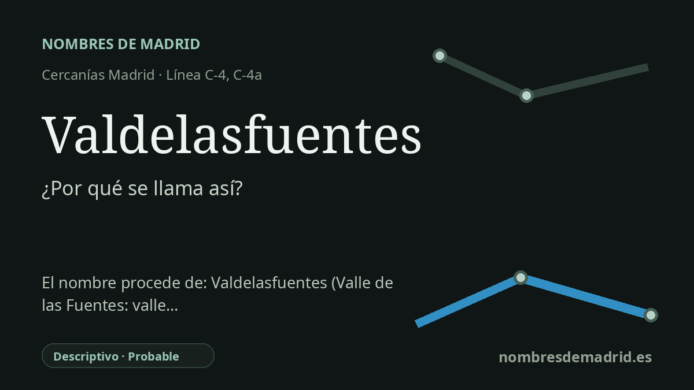

Publicado el · Investigación de Nombres de Madrid · Cómo verificamos cada origen · 9 fuentes consultadas
Respuesta rápida
Valdelasfuentes toma su nombre de la zona de Alcobendas vinculada al antiguo arroyo y camino de Valdelasfuentes. Es un topónimo descriptivo: val significa 'valle' y fuentes alude a manantiales o fuentes.
La historia del nombre
La estación de Valdelasfuentes toma su nombre de la zona de Valdelasfuentes, en Alcobendas, no de una persona ni de una institución. El nombre pertenece a un vocabulario paisajístico antiguo: val es una forma abreviada de valle, y fuentes puede aludir tanto a manantiales como a fuentes construidas.
Antes de convertirse en un barrio moderno y en una parada de transporte, el nombre ya estaba asociado a un arroyo, un camino y un paraje rural. El cronista Santiago Izquierdo describe el arroyo de Valdelasfuentes como un cauce con cabecera en el actual término de Alcobendas y explica el nombre por un pequeño valle donde se situaban manantiales, especialmente en las laderas septentrionales más marcadas.
La profundidad documental del topónimo es importante. La Real Asociación Española de Cronistas Oficiales y la tradición cronística de Sanse señalan que Valdelasfuentes aparece en un acta del Concejo de Madrid fechada el 14 de febrero de 1494, en el contexto del señalamiento de terrenos para viñas de los nuevos vecinos de San Sebastián de los Reyes. Eso hace que el topónimo sea muy anterior a la estación actual.
El agua no es un detalle secundario en esta interpretación. Material histórico municipal de Alcobendas sobre fuentes, lavaderos y abrevaderos muestra que las aguas locales ya se mencionaban en las Relaciones Topográficas de Felipe II del siglo XVI y, más tarde, en el diccionario decimonónico de Pascual Madoz. Valdelasfuentes encaja en ese paisaje local de manantiales, arroyos, caminos y tierras agrícolas.
El nombre ferroviario, en cambio, es moderno. Renfe identifica Valdelasfuentes como estación de Cercanías Madrid en Alcobendas, inaugurada en 2001, y la memoria del CRTM de 2001 incluye Valdelasfuentes entre las nuevas estaciones del tramo Cantoblanco-Alcobendas, entonces servido por la línea C-1. Por tanto, el nombre está muy bien asegurado como estación derivada de un topónimo previo, aunque convendría comprobar la redacción medieval exacta en el acta original del Concejo de Madrid de 1494.